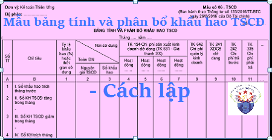

Hướng dẫn cách lập Bảng tính phân bổ khấu hao Tải sản cố định theo Thông tư 133 và 200 - Mẫu 06-TSCĐ, Bảng tính phân bổ khấu hao TSCD dùng để phản ánh số khấu hao TSCĐ phải trích và phân bổ số khấu hao đó cho các đối tượng sử dụng TSCĐ hàng tháng.
I. Mẫu Bảng tính phân bổ khấu hao TSCĐ:
|
Đơn vị: Kế toán Diệu Tâm Bộ phận: ……………… |
Mẫu số 06 - TSCĐ (Ban hành theo Thông tư số 133/2016/TT-BTC ngày 26/8/2016 của Bộ Tài chính) |
Số:………….
BẢNG TÍNH VÀ PHÂN BỔ KHẤU HAO TSCĐ
Tháng 09 năm 2026
Tháng 09 năm 2026
| Số TT | Chỉ tiêu | Tỷ lệ khấu hao (%) hoặc thời gian sử dụng |
Nơi sử dụng Toàn DN |
TK 154-Chi phí sản xuất kinh doanh dở dang (TK 631 - Giá thành SX) | TK 642 Chi phí quản lý kinh doanh | TK 241 XDCB dở dang | TK 242 Chi phí trả trước | TK 335 Chi phí phải trả | … | ||||
| Hoạt động …… | Hoạt động …… | Hoạt động …… | Hoạt động …… | ||||||||||
| Nguyên giá TSCĐ | Số khấu hao | ||||||||||||
| A | B | 1 | 2 | 3 | 4 | 5 | 6 | 7 | 8 | 9 | 10 | 11 | … |
| 1 | I. Số khấu hao trích tháng trước | ||||||||||||
| 2 |
II. Số KH TSCĐ tăng trong tháng - |
||||||||||||
| 3 |
III. Số KH TSCĐ giảm trong tháng - |
||||||||||||
| 4 | IV. Số KH trích tháng này (I + II - III) | ||||||||||||
| Cộng | x | ||||||||||||
|
Người lập bảng (Ký, họ tên) |
Ngày 15 tháng 09 năm 2026 Kế toán trưởng (Ký, họ tên) |
Xem thêm: Mẫu biên bản giao nhận TSCĐ
II. Cách lập BẢNG TÍNH PHÂN BỔ KHẤU HAO TSCĐ
1. Mục đích:
- Dùng để phản ánh số khấu hao TSCĐ phải trích và phân bổ số khấu hao đó cho các đối tượng sử dụng TSCĐ hàng tháng.
2. Kết cấu và nội dung chủ yếu
Bảng tính và phân bổ khấu hao TSCĐ có các cột dọc phản ánh số khấu hao phải tính cho từng đối tượng sử dụng TSCĐ và các hàng ngang phản ánh số khấu hao tính trong tháng trước, số khấu hao tăng, giảm và số khấu hao phải tính trong tháng này.
Cơ sở lập:
+ Dòng khấu hao đã tính tháng trước lấy từ bảng tính và phân bổ khấu hao TSCĐ tháng trước.
+ Các dòng sổ khấu hao TSCĐ tăng, giảm tháng này được phản ánh chi tiết cho từng TSCĐ có liên quan đến số tăng, giảm khấu hao TSCĐ theo chế độ quy định hiện hành về khấu hao TSCĐ.
Dòng số khấu hao phải tính tháng này được tính bằng (=) Số khấu hao tính tháng trước cộng (+) Với số khấu hao tăng, trừ (-) Số khấu hao giảm trong tháng.
Số khấu hao phải trích tháng này trên Bảng phân bổ khấu hao TSCĐ được sử dụng để ghi vào các Bảng kê và sổ kế toán có liên quan (cột ghi Có TK 214), đồng thời được sử dụng để tính giá thành thực tế sản phẩm, dịch vụ hoàn thành.
Xem thêm: Cách hạch toán khấu hao TSCĐ
--------------------------------------------------------------
--------------------------------------------------------------
